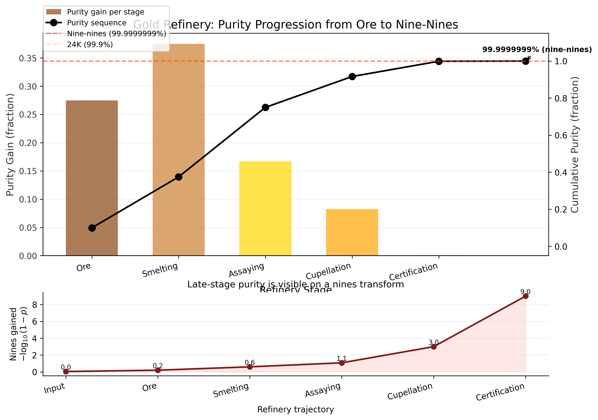
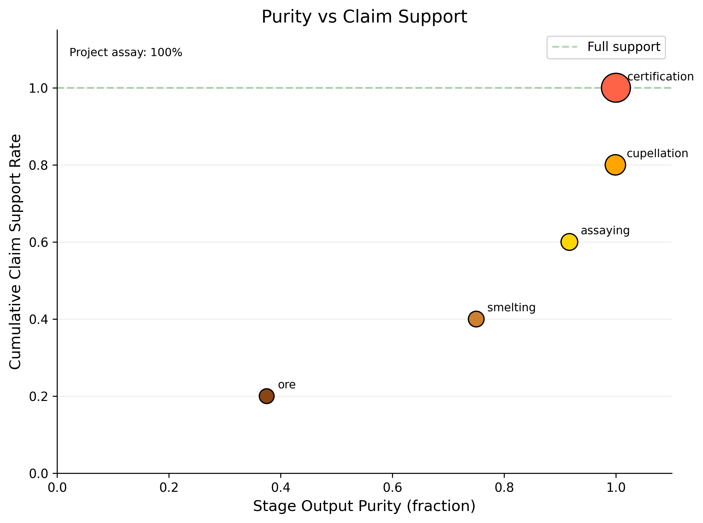
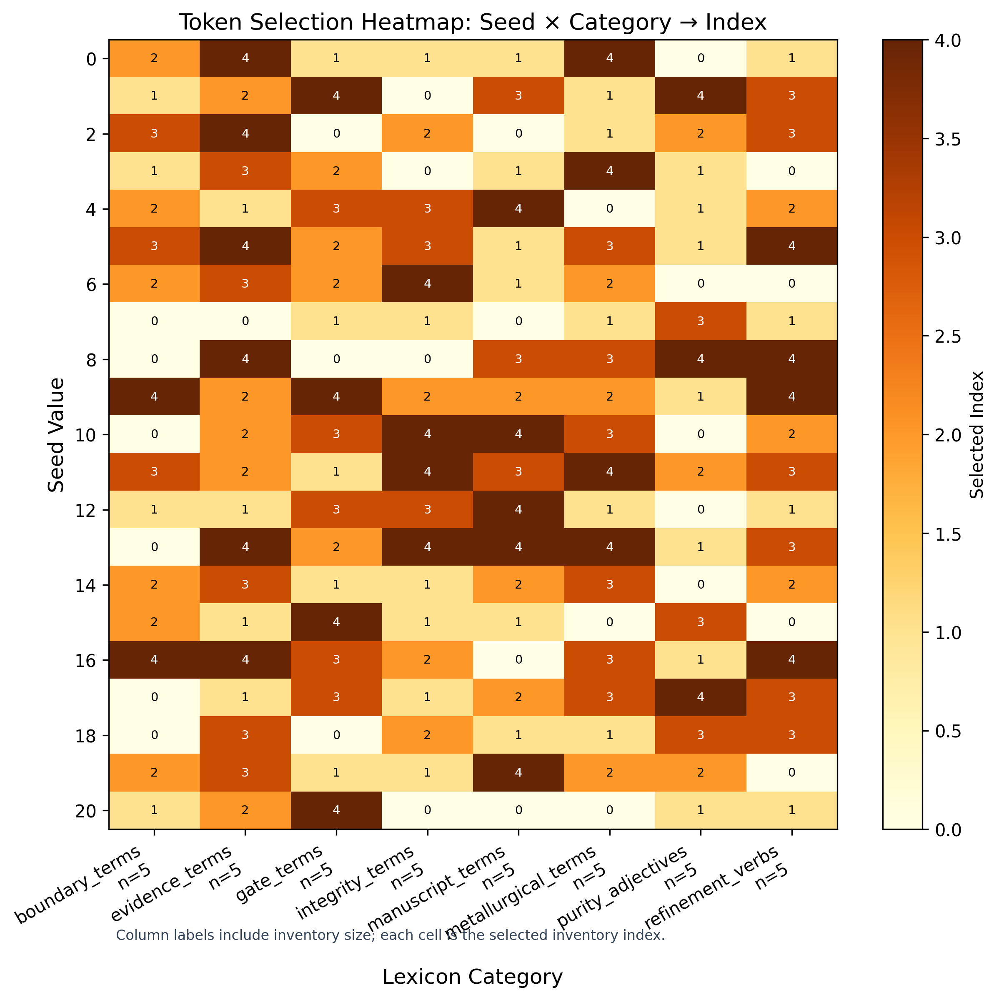
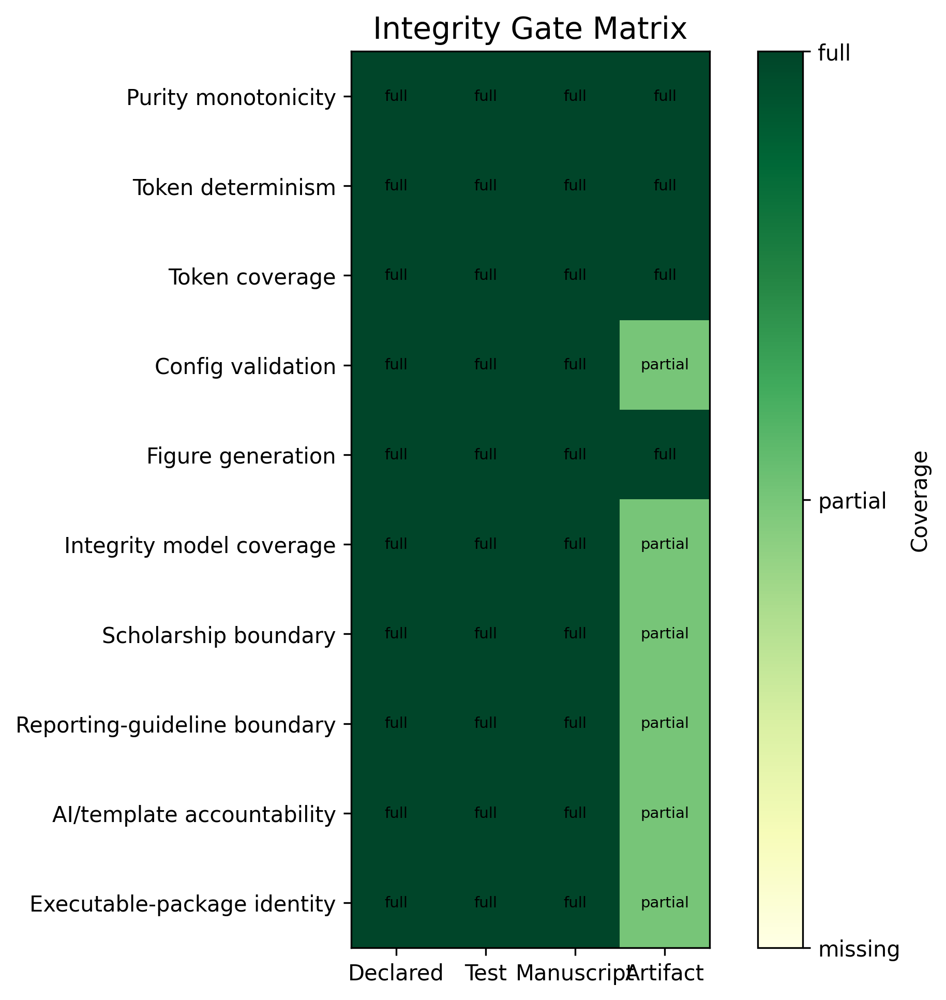
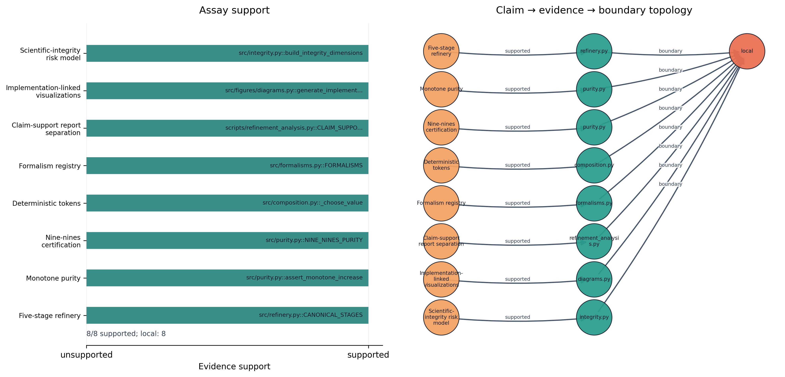
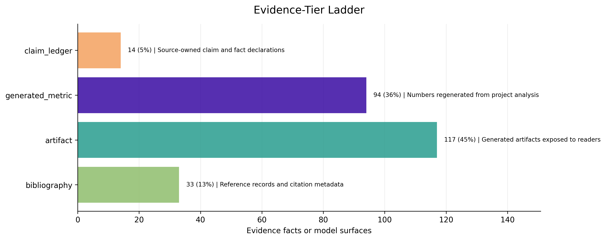

From Ore to Nine-Nines Purity via Mega-Madlib Token Injection
This paper presents a metallurgical analogy for scientific manuscript composition, mapping gold-refining stages onto the template infrastructure pipeline. The refinery processes manuscript ore through 5 stages - from raw draft (9K, ~37.5% purity) through smelting, assaying, and cupellation - to an internal nine-nines certification target (99.9999999%). The source domain is grounded in gold extraction, assaying, fineness, and hallmarking practice [marsden_house_2006; hallmarking_convention_1972], while the target domain is a reproducible computational manuscript rather than a claim about universal writing quality.
The analogy is load-bearing, not merely rhetorical: each metallurgical stage corresponds to a real template-infrastructure operation. This makes the paper an explicit structure-mapping exercise rather than a loose metaphor [gentner1983structure; hesse1966models]. Smelting removes dross (filler, unsupported claims); assaying tests claims against evidence; cupellation resolves cross-references; certification validates the full pipeline. The mega-madlib token engine selects 24 domain tokens deterministically via seeded SHA-256 digest over category inventories, ensuring every prose element is traceable and reproducible.
The contribution is also formalized: 6 equation-backed formalisms define purity, monotone refinement, token selection, claim support, gate vectors, and certification. This positions the manuscript as a research-compendium artifact in the lineage of literate programming, dynamic reports, and reproducible computational research [knuth1984literate; leisch2002sweave; peng2011reproducible; sandve2013ten]. The project-local claim assay reports 8/8 supported contribution claims (100.00%, passing), while the integrity model exposes 8 source-owned risk dimensions and the shared template evidence registry contributes 258 source-tiered facts when the validation gate has run.
Results: The refinery achieves final purity of 99.9999999% (nine-nines) (24K (nine-nines certified)) with a total purity gain of 90.00% across all stages. Nine-nines certification: Yes. The purity progression is shown in fig. 1, and the karat grading scale in fig. 2.
Keywords: gold refining, manuscript composition, mega-madlib, token injection, scientific purity, assaying, karat grading
Gold refining is one of humanity’s oldest purification technologies. From cupellation and fire assay to chemical and electrolytic refining, the process of separating noble metal from base ore has evolved into a staged pipeline with measurement and certification checkpoints [marsden_house_2006]. Hallmarking regimes make the verification layer socially and legally visible: the mark is not the metal itself, but an auditable assertion about fineness and control [hallmarking_convention_1972; lbma_good_delivery_rules]. This paper asks: can that pipeline serve as a load-bearing operational model for scientific manuscript composition - not merely a decorative analogy, but a real mapping from metallurgical stages to template-infrastructure operations?
A scientific manuscript accumulates impurities through its drafting lifecycle: unsupported claims, unresolved references, redundant prose, and citation gaps. The template repository provides infrastructure to detect and remove these impurities - validation gates, cross-reference checks, evidence registries, and coverage enforcement. This aligns with a broader reproducible-research literature that treats code, data, environment, and provenance as first-class scientific materials [buckheit_donoho_1995; peng2011reproducible; stodden2011default; sandve2013ten]. What this exemplar adds is a unifying model that names the purification stages and measures local purity progression.
This exemplar treats source tier and evidence spine as first-class manuscript objects. A claim is not considered refined because it sounds plausible; it is refined when its source path, generated variable, figure label, citation key, and validation gate can all be inspected. That is a narrower claim than empirical truth: reproducibility can set a minimum computational standard without replacing independent replication, domain expertise, or peer review [peng2011reproducible; ioannidis2005false].
We map five gold-refining stages onto manuscript operations:
Each stage has a metallurgical operation, a manuscript operation, an
input purity, and an output purity. Purity increases monotonically — a
constraint enforced by
src/purity.py::assert_monotone_increase and tested in
tests/test_refinery.py.
The manuscript’s domain vocabulary is not hand-authored prose but config-owned lexical data, selected deterministically by a seeded SHA-256 digest. The engine generates 24 tokens across 11 slots and 8 lexicon categories. Every token choice is reproducible, traceable to its config key, and bound to a manuscript section. In this respect the exemplar extends literate programming and dynamic statistical reporting: code, data, and prose are kept synchronized, but the prose-level choices are also made inspectable [knuth1984literate; leisch2002sweave; marwick2018packaging].
The deeper token inventory is deliberately spread across the paper. Introduction tokens name the integrity frame; methods tokens bind evidence validation, figure registry check, and citation validation to source-owned operations; results tokens surface artifact manifest, figure registry, and token provenance; discussion tokens mark the fork obligation and domain validator where the analogy must stop.
The metaphor becomes operational only when every transformation has
an implementation owner. In this exemplar, configuration creates the
ore, src/refinery.py defines the purity stages,
src/composition.py turns slots into deterministic tokens,
src/formalisms.py owns the equation registry, the
src/figures/ package turns those sources into registered
visuals, and the template validators decide whether the hydrated
manuscript can be treated as publication metal. The loop is deliberately
closed: failures from the validators point back to source files, not to
hand-polished output.
Is the analogy load-bearing or rhetorical? We assert it is both: it frames the methods paper (rhetorical) and operationalizes each stage against real infrastructure (load-bearing). Analogy theory gives the discipline for that claim: preserve relational structure, declare negative analogies, and do not transfer unsupported source-domain properties into the target domain [gentner1983structure; hesse1966models; holyoak_thagard_1995]. The open question is not whether to use the analogy, but where the mapping breaks - a question the discussion addresses.
The refinery pipeline consists of 5 canonical stages, each mapping a
metallurgical operation to a manuscript-composition operation. The
pipeline is implemented in src/refinery.py and validated by
src/purity.py. The methods surface now has four coupled
layers: the refinery stages, the mega-madlib token plan, the generated
formalism registry, and the scholarship boundary that determines which
claims may be generalized beyond this exemplar.
Methodologically, the paper treats composition as part of a research compendium: authored sources, executable scripts, generated reports, figures, and rendered manuscript outputs are separated but linked [marwick2018packaging]. That design follows the executable-paper and notebook traditions in which narrative is coupled to runnable analysis rather than copied from it [leisch2002sweave; rule2019jupyter]. The novelty claimed here is narrower: the token-level narrative choices are deterministic and provenance-bearing, not that a template can validate scientific truth.
Structured reporting guidelines provide the closest scholarly analogue for the gate layer, but they also set its limit. CONSORT, STROBE, PRISMA, ARRIVE, and the EQUATOR Network define field-specific reporting items so a manuscript can be inspected, appraised, and in some cases replicated more easily [schulz2010consort; vonelm2007strobe; page2021prisma; percie_du_sert2020arrive; equator_network_reporting_guidelines]. In this exemplar, token coverage, evidence registration, and render validation play a similar internal role: they make omissions visible and bind declarations to artifacts. They do not test whether an external study was designed well, executed correctly, or substantively true.
| # | Stage | Output purity | Karat | Metallurgical operation |
|---|---|---|---|---|
| 1 | ore | 37.50% | 9K | Extract raw gold-bearing ore from the earth |
| 2 | smelting | 75.00% | 18K | Heat ore to separate gold from slag and dross |
| 3 | assaying | 91.67% | 22K | Test a sample to determine gold content and impurities |
| 4 | cupellation | 99.900% | 24K | Refine by blowing air through molten lead-gold alloy |
| 5 | certification | 99.9999999% (nine-nines) | 24K (nine-nines certified) | Certify purity grade and stamp hallmark |
The purity sequence across all stages is: 0.100000, 0.375000, 0.750000, 0.916700, 0.999000, 1.000000
Purity is strictly increasing — enforced by
assert_monotone_increase() which raises
ValueError if any stage’s output purity does not exceed its
input. Formally, for stages \(s_1, \ldots,
s_n\) with input purity \(p_{\text{in}}^{(i)}\) and output purity
\(p_{\text{out}}^{(i)}\):
\[ p_{\text{out}}^{(i)} > p_{\text{in}}^{(i)} \quad \text{and} \quad p_{\text{in}}^{(i+1)} = p_{\text{out}}^{(i)} \quad \forall i \in \{1, \ldots, n-1\} \]
The full purity progression is shown in fig. 1 (see sec. 4).
The formal layer is generated from src/formalisms.py,
not hand-numbered prose. tbl. 1
lists the source evidence for each equation, and the equation blocks
below are auto-numbered by the renderer.
| ID | Formalism | Equation | Source |
|---|---|---|---|
| F1 | Purity functional | eq. 1 | src/purity.py::format_purity |
| F2 | Monotone refinement | eq. 2 | src/purity.py::assert_monotone_increase |
| F3 | Token-selection digest | eq. 3 | src/composition.py::_choose_value |
| F4 | Claim-support fraction | eq. 4 | src/evidence.py::EvidenceRegistry.support_rate |
| F5 | Integrity vector | eq. 5 | manuscript/config.yaml#gold_refinement.audit_rules |
| F6 | Certification predicate | eq. 6 | src/refinery.py::RefineryResult.is_nine_nines_certified |
F1: Purity functional. Manuscript purity is treated as a bounded fraction mapped to a reader-facing grade.
\[ \pi(s) \in [0, 1], \qquad g(s) = \operatorname{karat}(\pi(s)) \qquad{(1)}\]
The value is descriptive: it summarizes local validation state rather
than external quality. Source:
src/purity.py::format_purity.
F2: Monotone refinement. A valid refinery run requires every stage to improve the previous purity state.
\[ \pi_0 < \pi_1 < \cdots < \pi_n \qquad{(2)}\]
The test suite rejects equal or decreasing stage outputs. Source:
src/purity.py::assert_monotone_increase.
F3: Token-selection digest. Every mega-madlib token is selected from config-owned inventory by a deterministic digest.
\[ i = \operatorname{int}(\operatorname{SHA256}(seed \Vert slot \Vert category \Vert ordinal \Vert inventory)_{0:12}, 16) \bmod \lvert inventory \rvert \qquad{(3)}\]
Changing the seed or inventory changes the plan; replaying both
reproduces it. Source:
src/composition.py::_choose_value.
F4: Claim-support fraction. Contribution claims are assayed by counting supported local evidence pointers.
\[ \sigma = \frac{\lvert\{c \in C : supported(c)\}\rvert}{\lvert C \rvert} \qquad{(4)}\]
The numerator and denominator come from the project-local
claim-support registry. Source:
src/evidence.py::EvidenceRegistry.support_rate.
F5: Integrity vector. Scientific integrity is represented as a vector of gate outcomes rather than one scalar badge.
\[ \mathbf{v} = (v_{tokens}, v_{figures}, v_{claims}, v_{render}, v_{references}) \qquad{(5)}\]
A publication claim is only as strong as the weakest required gate.
Source:
manuscript/config.yaml#gold_refinement.audit_rules.
F6: Certification predicate. Certification is a predicate over final purity and validation readiness.
\[ \operatorname{certified}(r) \iff \pi_{final}(r) \geq 0.999999999 \land gates(r) \qquad{(6)}\]
The predicate binds the nine-nines metaphor to the actual validation
chain. Source:
src/refinery.py::RefineryResult.is_nine_nines_certified.
The mega-madlib engine selects tokens from config-owned lexicon categories using a deterministic digest:
\[ \text{index} = \text{int}\left(\text{SHA-256}\left(\text{seed} \mid \text{slot} \mid \text{category} \mid \text{ordinal} \mid \text{inventory}\right)[:12], 16\right) \mod n \]
where \(n\) is the size of the lexicon category inventory. Selected metallurgical terms: assaying, parting, smelting. Selected manuscript terms: evidence, evidence. The same digest rule is formalized in eq. 3, while the gate vocabulary for this section binds evidence validation, figure registry check, and citation validation to concrete validation surfaces.
| Category | Count | Sample |
|---|---|---|
| boundary_terms | 5 | local claim, analogy boundary, fork obligation… |
| evidence_terms | 5 | fact registry, artifact manifest, citation check… |
| gate_terms | 5 | prerender, evidence validation, figure registry check… |
| integrity_terms | 5 | evidence spine, source tier, validation gate… |
| manuscript_terms | 5 | draft, claim, citation… |
| metallurgical_terms | 5 | cupellation, assaying, smelting… |
| purity_adjectives | 5 | unrefined, purified, certified… |
| refinement_verbs | 5 | assaying, certifying, refining… |
Karat grades map purity fractions to a gold-fineness vocabulary used here as an analogy surface [marsden_house_2006; lbma_good_delivery_rules]:
The mapping is implemented in
src/purity.py::karat_for_purity(). The final nine-nines
target is a deliberately stringent local certification predicate, not an
assertion that all gold markets or manuscript-quality regimes use that
threshold. The karat grading chart is shown in fig. 2 (see sec. 4).
| Phase | Input | Transformation | Output | Guard |
|---|---|---|---|---|
| Schema intake | manuscript/config.yaml | Load and validate gold_refinement block | GoldRefinementConfig | config schema tests |
| Refinery execution | GoldRefinementConfig | Run five refinery stages with monotone purity | RefineryResult | monotone purity test |
| Token planning | GoldRefinementConfig | Expand slots into deterministic token choices | TokenPlan | seed-stability tests |
| Figure generation | RefineryResult and TokenPlan | Generate purity progression, karat grading, and token density figures | ../figures/*.png | nonblank figure tests |
| Integrity risk modeling | audit rules, failure modes, claims, and shared evidence registry | Score integrity dimensions and summarize evidence tiers | integrity tables and risk visualizations | tests/test_integrity.py |
| Manuscript hydration | manuscript shells and manuscript_variables.json | Resolve {{TOKEN}} placeholders into output/manuscript/ | hydrated Markdown manuscript | unresolved-token scan |
| Render and validate | output/manuscript | Render PDF, HTML through shared template pipeline | output/pdf and output/web | render command |
The pipeline table is intentionally operational rather than decorative: a fork that changes the stages must update the source function, generated variables, figures, and validation gates together.
The implementation circuit shown in fig. 9 is the method’s wiring diagram.
It distinguishes three ownership layers. First, authored sources own
intent: config declares vocabulary and claims, src/ owns
computation, and the claim ledger registers evidence facts. Second,
generated artifacts own observation: token plans, figures, resolved
Markdown, reports, and dashboards are rebuilt rather than edited. Third,
template gates own permission to promote the manuscript: unresolved
tokens, unsupported facts, missing citations, broken references, and
invalid PDFs block certification. This is the manuscript analogue of
provenance-aware workflow design: entities, activities, agents, and
generated outputs are kept traceable so readers can assess reliability
rather than infer it from polished prose [moreau2013prov;
belhajjame2015ontologies].
This split keeps the gold metaphor honest. A fork is allowed to change the ore, the furnace, or the assay, but it must do so in the source layer and then let the generated and validation layers expose the consequences.
The integrity model converts manuscript risks into source-owned dimensions. It does not replace peer review or domain validation. It names the failure class, severity, detectability, evidence surface, owner, and validator so the manuscript can distinguish “the analogy is vivid” from “the claim is backed by a regenerable check.” The current pass reports 8 integrity dimensions; highest residual risk is I4 (Analogy boundary) at 15.
| ID | Dimension | Residual risk | Owner | Validator |
|---|---|---|---|---|
| I1 | Monotone refinery | 4 | source code | tests/test_refinery.py |
| I2 | Lexicon completeness | 3 | config | tests/test_config.py |
| I3 | Token hydration | 5 | generated variables | tests/test_manuscript_variables.py |
| I4 | Analogy boundary | 15 | claim ledger | infrastructure.validation.cli evidence –fail-on-issues |
| I5 | Claim support | 10 | evidence assay | output/reports/claim_support_registry.json |
| I6 | Figure registry | 8 | figure producer | tests/test_registry_integrity.py |
| I7 | Citation hygiene | 4 | bibliography | infrastructure.reference.citation validate |
| I8 | Render readiness | 8 | template pipeline | template pipeline render and validate stages |
The residual-risk score is deliberately simple: high severity and low detectability raise priority. The score is not a universal risk model; it is a local audit heuristic used to decide where a fork must add validators before expanding claims.
| Owner | Dimensions |
|---|---|
| bibliography | 1 |
| claim ledger | 1 |
| config | 1 |
| evidence assay | 1 |
| figure producer | 1 |
| generated variables | 1 |
| source code | 1 |
| template pipeline | 1 |
This table also makes generated-number ownership explicit. Counts, support rates, and figure labels belong to regenerated reports and registries; the manuscript consumes them through variables. Authored prose may interpret those values, but it should not silently restate them as hand-maintained facts.
The refinery pipeline produces a monotonically increasing purity sequence across 5 stages, reaching final purity of 99.9999999% (nine-nines) (24K (nine-nines certified)).

| Stage | Name | Output purity | Karat | Gain |
|---|---|---|---|---|
| 1 | ore | 37.50% | 9K | Extract raw gold-bearing ore from the earth |
| 2 | smelting | 75.00% | 18K | Heat ore to separate gold from slag and dross |
| 3 | assaying | 91.67% | 22K | Test a sample to determine gold content and impurities |
| 4 | cupellation | 99.900% | 24K | Refine by blowing air through molten lead-gold alloy |
| 5 | certification | 99.9999999% (nine-nines) | 24K (nine-nines certified) | Certify purity grade and stamp hallmark |
The mega-madlib engine generated 24 tokens from seed 431 across 8 lexicon categories.

| Category | Count |
|---|---|
| boundary_terms | 4 |
| evidence_terms | 5 |
| gate_terms | 5 |
| integrity_terms | 2 |
| manuscript_terms | 2 |
| metallurgical_terms | 3 |
| purity_adjectives | 2 |
| refinement_verbs | 1 |
| Section | Token count |
|---|---|
| authoring_contract | 2 |
| discussion | 3 |
| evaluation | 2 |
| introduction | 2 |
| methodology | 8 |
| reproducibility | 2 |
| results | 5 |
| Variable | Category | Value | Section | Source |
|---|---|---|---|---|
| AUTHORING_BOUNDARY_TERM_1 | boundary_terms | analogy boundary | authoring_contract | manuscript/config.yaml#gold_refinement.lexicon.boundary_terms[1] |
| AUTHORING_BOUNDARY_TERM_2 | boundary_terms | non-claim | authoring_contract | manuscript/config.yaml#gold_refinement.lexicon.boundary_terms[4] |
| DISCUSSION_BOUNDARY_TERM_1 | boundary_terms | fork obligation | discussion | manuscript/config.yaml#gold_refinement.lexicon.boundary_terms[2] |
| DISCUSSION_BOUNDARY_TERM_2 | boundary_terms | domain validator | discussion | manuscript/config.yaml#gold_refinement.lexicon.boundary_terms[3] |
| DISCUSSION_REFINEMENT_VERB | refinement_verbs | smelting | discussion | manuscript/config.yaml#gold_refinement.lexicon.refinement_verbs[3] |
| EVALUATION_GATE_TERM_1 | gate_terms | prerender | evaluation | manuscript/config.yaml#gold_refinement.lexicon.gate_terms[0] |
| EVALUATION_GATE_TERM_2 | gate_terms | citation validation | evaluation | manuscript/config.yaml#gold_refinement.lexicon.gate_terms[3] |
| INTRO_INTEGRITY_TERM_1 | integrity_terms | source tier | introduction | manuscript/config.yaml#gold_refinement.lexicon.integrity_terms[1] |
| INTRO_INTEGRITY_TERM_2 | integrity_terms | evidence spine | introduction | manuscript/config.yaml#gold_refinement.lexicon.integrity_terms[0] |
| METHOD_GATE_TERM_1 | gate_terms | evidence validation | methodology | manuscript/config.yaml#gold_refinement.lexicon.gate_terms[1] |
| METHOD_GATE_TERM_2 | gate_terms | figure registry check | methodology | manuscript/config.yaml#gold_refinement.lexicon.gate_terms[2] |
| METHOD_GATE_TERM_3 | gate_terms | citation validation | methodology | manuscript/config.yaml#gold_refinement.lexicon.gate_terms[3] |
| METHOD_MANUSCRIPT_TERM_1 | manuscript_terms | evidence | methodology | manuscript/config.yaml#gold_refinement.lexicon.manuscript_terms[4] |
| METHOD_MANUSCRIPT_TERM_2 | manuscript_terms | evidence | methodology | manuscript/config.yaml#gold_refinement.lexicon.manuscript_terms[4] |
| METHOD_METAL_TERM_1 | metallurgical_terms | assaying | methodology | manuscript/config.yaml#gold_refinement.lexicon.metallurgical_terms[1] |
| METHOD_METAL_TERM_2 | metallurgical_terms | parting | methodology | manuscript/config.yaml#gold_refinement.lexicon.metallurgical_terms[3] |
| METHOD_METAL_TERM_3 | metallurgical_terms | smelting | methodology | manuscript/config.yaml#gold_refinement.lexicon.metallurgical_terms[2] |
| REPRO_EVIDENCE_TERM_1 | evidence_terms | fact registry | reproducibility | manuscript/config.yaml#gold_refinement.lexicon.evidence_terms[0] |
| REPRO_EVIDENCE_TERM_2 | evidence_terms | figure registry | reproducibility | manuscript/config.yaml#gold_refinement.lexicon.evidence_terms[3] |
| RESULTS_EVIDENCE_TERM_1 | evidence_terms | artifact manifest | results | manuscript/config.yaml#gold_refinement.lexicon.evidence_terms[1] |
| RESULTS_EVIDENCE_TERM_2 | evidence_terms | figure registry | results | manuscript/config.yaml#gold_refinement.lexicon.evidence_terms[3] |
| RESULTS_EVIDENCE_TERM_3 | evidence_terms | token provenance | results | manuscript/config.yaml#gold_refinement.lexicon.evidence_terms[4] |
| RESULTS_PURITY_ADJ_1 | purity_adjectives | unrefined | results | manuscript/config.yaml#gold_refinement.lexicon.purity_adjectives[0] |
| RESULTS_PURITY_ADJ_2 | purity_adjectives | purified | results | manuscript/config.yaml#gold_refinement.lexicon.purity_adjectives[1] |
Selected purity adjectives for this section: unrefined, purified. Selected evidence terms: artifact manifest, figure registry, token provenance.



The integrity gate matrix in fig. 7 makes the validation story visible: audit rules are not prose promises unless they connect to tests, manuscript surfaces, and generated artifacts.

The formalism traceability view in fig. 8 links each equation-backed formalism to the source surface that owns it. This is the visual counterpart to tbl. 1.

The implementation circuit in fig. 9 shows how the concept is executed rather than merely described. Configuration feeds code; code emits variables, figures, and reports; manuscript hydration consumes those artifacts; validators feed errors back to source ownership. The figure is intentionally circular because the artifact is not complete after prose generation. It is complete only after the validation return path has no blocking evidence, citation, reference, or render failures.

The claim-evidence assay in fig. 10 turns the assaying stage into a
reader-facing diagnostic. Each bar is a contribution claim from
manuscript/config.yaml, and each annotation names the
source file or symbol used to support it. This makes the contribution
ledger inspectable at the same level as the purity plots: unsupported
claims would appear as failed assays rather than remaining hidden in
prose.

The integrity risk matrix in fig. 11 plots severity against detectability for the 8 integrity dimensions in tbl. 2. Bubble size encodes residual risk, while color encodes the source tier that owns the evidence surface. This makes boundary failures more visible than cosmetic source checks without hiding whether the support comes from config, source code, claim ledger, generated metric, artifact, bibliography, or validation gate. The matrix is intentionally local: it prioritizes where this exemplar needs source ownership, not where every future manuscript should focus.

The evidence-tier ladder in fig. 12 summarizes the evidence surfaces available to the shared template evidence registry or, before that gate has run, the fallback source tiers from the integrity model. It gives a quick view of whether the manuscript is leaning on generated metrics, claim-ledger facts, bibliography records, source code, or disposable artifacts.

| Source tier | Count | Role |
|---|---|---|
| artifact | 117 | Generated artifacts exposed to readers |
| generated_metric | 94 | Numbers regenerated from project analysis |
| bibliography | 33 | Reference records and citation metadata |
| claim_ledger | 14 | Source-owned claim and fact declarations |
| Claim | Statement | Evidence | Boundary |
|---|---|---|---|
| Five-stage refinery | The refinery pipeline has 5 canonical stages from ore to nine-nines. | src/refinery.py::CANONICAL_STAGES | local |
| Monotone purity | Purity increases strictly across all refinery stages. | src/purity.py::assert_monotone_increase | local |
| Nine-nines certification | The certification stage achieves 99.9999999% purity. | src/purity.py::NINE_NINES_PURITY | local |
| Deterministic tokens | Token selection is deterministic via seeded SHA-256 digest. | src/composition.py::_choose_value | local |
| Formalism registry | The manuscript exposes 6 source-owned formalisms with equation labels. | src/formalisms.py::FORMALISMS | local |
| Claim-support report separation | The project-local contribution-claim report is written to claim_support_registry.json. | scripts/refinement_analysis.py::CLAIM_SUPPORT_REGISTRY_NAME | local |
| Implementation-linked visualizations | The manuscript includes generated visualizations that link the refinery analogy to source code, variables, evidence, and validation gates. | src/figures/diagrams.py::generate_implementation_circuit | local |
| Scientific-integrity risk model | The manuscript includes a source-owned integrity risk model linking failure modes, validators, evidence surfaces, and fork obligations. | src/integrity.py::build_integrity_dimensions | local |
The project-local claim-support assay reports 8 supported claims out
of 8 total claims, for 100.00% support. Unsupported claims: 0. The
generated project report path is
output/reports/claim_support_registry.json; the shared
template evidence report remains
output/reports/evidence_registry.json.
When the template evidence gate has run, the shared registry supplies source-tiered facts used by the evidence validator. Current fact count available to this variable pass: 258.
| Fact kind | Count |
|---|---|
| artifact | 75 |
| citation | 33 |
| equation | 7 |
| figure | 27 |
| number | 100 |
| section | 10 |
| table | 6 |
The visualization registry is paired with
output/reports/figure_quality_report.json, a generated QA
report that checks PNG and SVG existence, file dimensions, nonblank
pixel mass, color variance, and registry parity. Current status: passing
with 12/12 registered figures passing and registry parity reported as
Yes. PNG remains the manuscript render path; SVG is the companion
technical artifact for inspection, reuse, and source-level debugging.
tbl. 6 summarizes the generated
surface.
| Figure | PNG | SVG | Dimensions | Nonwhite | Variance | Status |
|---|---|---|---|---|---|---|
| claim_evidence_assay | yes | yes | 3952x1904 | 0.211 | 0.05901302 | pass |
| evidence_tier_ladder | yes | yes | 3348x1332 | 0.217 | 0.05647730 | pass |
| formalism_traceability | yes | yes | 3315x1631 | 0.133 | 0.04262721 | pass |
| implementation_circuit | yes | yes | 2966x1845 | 0.068 | 0.02235231 | pass |
| integrity_gate_matrix | yes | yes | 1829x1933 | 0.410 | 0.16336351 | pass |
| integrity_risk_matrix | yes | yes | 2499x1910 | 0.387 | 0.01770377 | pass |
| karat_grading | yes | yes | 2961x1698 | 0.279 | 0.07300982 | pass |
| provenance_sankey | yes | yes | 2850x1461 | 0.070 | 0.02178809 | pass |
| purity_claim_scatter | yes | yes | 2340x1744 | 0.032 | 0.01428277 | pass |
| purity_progression | yes | yes | 3024x2125 | 0.182 | 0.03967814 | pass |
| token_density | yes | yes | 3289x1856 | 0.234 | 0.06699486 | pass |
| token_heatmap | yes | yes | 2397x2399 | 0.627 | 0.12908659 | pass |
The gold-refining analogy operates on two levels. Rhetorically, it provides a memorable framing for a methods paper: purity progression, karat grading, and certification are vivid metaphors for manuscript quality. Operationally, each stage maps to a real template-infrastructure operation - smelting to claim removal, assaying to evidence validation, cupellation to cross-reference resolution, and certification to full pipeline validation. The scholarship makes the test sharper: the analogy is useful only where the relation among stages is preserved, not where surface language makes writing sound like metallurgy [gentner1983structure; hesse1966models].
The analogy is smelting the manuscript: it performs the refinement it describes. Its fork obligation is equally important. Gold refining can model staged purification, but it cannot certify domain truth unless the fork supplies a real domain validator and evidence source.
The added implementation and claim-assay figures sharpen that boundary. They show that “purity” is not a free-standing aesthetic judgment. It is a local statement about whether source-owned stages, generated artifacts, claim ledgers, figure registries, and validation commands agree. The figures therefore make a negative claim as important as the positive one: when a fork lacks a validator, a ledger, or a source artifact, the metaphor must stop at analogy and cannot be promoted to certification. That boundary follows reproducibility scholarship as much as metaphor theory: formal traceability can support rerunning and auditing, but it cannot by itself establish external validity [peng2011reproducible; wilkinson2016fair; ioannidis2005false].
The same caution applies to checklist-shaped infrastructure. Reporting guidelines improve the inspectability of research reports by naming information that should be present, but checklist completion is not the same as methodological quality, absence of bias, or truth of results [equator_network_reporting_guidelines; schulz2010consort; page2021prisma]. The gold-refinement gates should therefore be read as completeness and traceability checks. They can expose a missing citation, an unresolved token, or an unsupported local claim; they cannot convert weak domain evidence into strong domain evidence.
src/domain_adapter.py and domain_profile.yaml
to translate a domain’s own metrics into the same purity scale before
reusing certification language.| Mode | Risk | Detection | Mitigation |
|---|---|---|---|
| Non-monotone purity | A stage has lower output purity than input. | assert_monotone_increase raises ValueError. | Fix stage purity targets in src/refinery.py. |
| Empty lexicon category | A required lexicon category is empty or missing. | Config validation raises GoldRefinementConfigError. | Add vocabulary to manuscript/config.yaml. |
| Unresolved token | A manuscript placeholder has no generated variable. | test_all_manuscript_tokens_are_generated fails. | Add variable in src/manuscript_variables.py. |
| Rhetorical-only analogy | The analogy is decorative with no operational mapping. | Review that each stage maps to a real infrastructure operation. | Connect stages to template pipeline operations. |
| Undetected integrity gap | A high-severity failure mode is present but no owner, validator, or generated artifact makes it visible. | build_integrity_dimensions lists severity, detectability, owner, validator, and evidence surface. | Add or revise the source-owned integrity dimension before promoting the manuscript. |
| Citation laundering | A real citation is used to make a stronger claim than the source supports. | Scope and evaluation prose separate analogy support, reproducibility support, and domain-evidence support. | Lower the claim boundary or add a source-owned validator before using certification language. |
| Checklist theater | A fork treats filled reporting rows or passed template gates as proof of scientific validity. | Methods, scope, discussion, and evaluation prose separate completeness, traceability, and reproducibility from domain truth. | Add the field’s reporting guideline, domain validators, and independent evidence before making compliance or validity claims. |
| Executable-package ambiguity | A fork publishes a rendered manuscript without enough software, metadata, or version identity to rebuild the object. | Reproducibility, scope, evaluation, and authoring-contract prose require source-owned metadata, exact release citation, and regenerated output reports. | Record software/template release identity, preserve source-owned metadata, and rerun the full pipeline before publishing. |
| Principle | Rationale |
|---|---|
| Analogy is load-bearing | Each metallurgical stage maps to a real template-infrastructure operation, not mere decoration. |
| Purity increases monotonically | The refinery pipeline guarantees strictly increasing purity from ore to certification. |
| Token selection is deterministic | A fixed seed and lexicon produce the same injection plan across reruns. |
| Configuration owns prose choices | Reviewers can inspect the declared language surface before generation. |
| Generated output is disposable | The durable artifact is the regeneration contract, not hand-edited output. |
| Scholarship sets boundaries | External sources can anchor analogy, reproducibility, and provenance claims, but they cannot expand local certification beyond what the source-owned evidence supports. |
| Completeness is not validity | Checklist-shaped gates can show that required reporting surfaces are present and traceable, but they do not certify domain truth, study design quality, or absence of bias. |
| Executable package is the object | Narrative, config, code, metadata, figures, reports, and rendered outputs must travel as a rebuildable package rather than as detached static prose. |
The analogy breaks when purity becomes a rhetorical grade detached from evidence. In this exemplar, eq. 4 and eq. 5 keep the grade tied to claim support and gate coverage. A fork that cannot provide comparable source-owned gates should keep the gold-refining language as metaphor only and avoid publication-strength claims.
The practical rule is simple: do not add an impressive figure unless its path through fig. 9 is visible. A visual can summarize an idea, but it only supports a manuscript claim when the claim-evidence assay can point to the owning file, symbol, generated artifact, and validation surface.
The integrity risk matrix adds one more brake. A fork may have all figures registered and still be scientifically weak if its highest-severity risks are only weakly detectable. In this exemplar, tbl. 2 makes that weakness inspectable by pairing each dimension with an owner and validator. The useful question for a fork is therefore not “can the manuscript render?” but “which severe failures would the current pipeline miss, and what source-owned gate would expose them?”
The evidence-tier ladder also prevents a common drift in generated manuscripts: treating generated artifacts as if they were independent evidence. A generated metric can support an internal consistency claim, but a domain claim needs a domain source tier. The ladder makes that distinction visible without pretending that a large fact count is the same as stronger external validity. In FAIR and PROV terms, richer metadata improves findability, reuse, and traceability, but it does not convert weak evidence into strong evidence [wilkinson2016fair; moreau2013prov].
Open-science standards push in the same direction. The TOP Guidelines and UNESCO Recommendation on Open Science emphasize transparency, scrutiny, reproducibility, accountability, and shared research objects [nosek2015top; unesco2021_open_science]. This exemplar implements a small local version of those values; it does not claim that openness alone resolves study design, fairness, or domain-validity problems.
The gold-refinery pipeline demonstrates that a metallurgical analogy can be load-bearing: each stage maps to a real template-infrastructure operation, purity increases monotonically, and the final stage achieves nine-nines certification (99.9999999% (nine-nines)).
manuscript/config.yamlThe durable result is not the current prose snapshot. It is the reproducible contract that can rebuild the prose, figures, formalisms, and validation reports from source.
That contract is the paper’s central contribution. It demonstrates how an analogy can be useful without being loose: every metaphorical move either points to a source-owned implementation surface or stays explicitly inside the discussion boundary. The paper therefore contributes a reproducible-composition pattern, not a universal theory of manuscript quality.
The added integrity model makes the same claim in a stricter form: every high-value visual or formal statement should have an owner, an evidence tier, and a validator. Without those three surfaces, the right outcome is not a more polished metaphor; it is a narrower claim. This keeps the final certification claim aligned with reproducible-research norms: the artifact is stronger when it can be regenerated and audited, but still bounded by the evidence its sources actually contain [sandve2013ten; marwick2018packaging].
The refinery pipeline is fully deterministic. Given the same
manuscript/config.yaml and src/ code, every
run produces identical output. This is the local version of a
reproducible computational research norm: the reader should be able to
inspect the source, rerun the workflow, and recover the same derived
artifacts [peng2011reproducible; sandve2013ten].
Executable-publication scholarship sharpens that norm. Executable research compendia and executable papers treat an article as a package of narrative, code, data, environment, and rendered outputs rather than as a static document with detachable supplements [nuest2017erc; lasser2020executable]. The present exemplar is smaller and more template-specific: it does not provide a universal executable-paper format, but it does make the manuscript variables, figures, reports, and rendered PDF/HTML products rebuildable from source-owned inputs.
| Category | Count |
|---|---|
| Figures | 24 |
| Data files | 3 |
| Reports | 11 |
| Total | 38 |
# Run the refinery analysis
uv run python projects/templates/template_gold_refinement/scripts/refinement_analysis.py
# Generate manuscript variables
uv run python projects/templates/template_gold_refinement/scripts/z_generate_manuscript_variables.py
# Full pipeline (from repo root)
./run.sh --project templates/template_gold_refinement --pipeline --core-onlyAll vocabulary, slots, section conditions, steganography toggles, and
optional LLM review gates are declared in
manuscript/config.yaml under gold_refinement:,
steganography:, and llm:. The config is the
source of truth; generated prose is disposable.
src/pipeline_policy.py turns those policy blocks into an
explicit secure-pipeline hook. That keeps the optional hardening path
visible before execution instead of burying it in shell glue or
prose.
The reproducibility spine uses fact registry and figure registry as
generated artifacts rather than reader trust signals. Variable
generation records 2411971d39e10f3d; analysis writes
refinery, token, claim-support, dashboard, and figure artifacts;
validation may add the shared evidence registry used by template
scientific-integrity checks.
The implementation circuit gives a reproducibility checklist for
future forks. A reader should be able to start at any rendered figure or
claim, follow it to a generated variable or report, follow that artifact
to src/ or manuscript/config.yaml, and rerun
the same stage command. If that path is broken, the fork has produced a
static illustration rather than a reproducible refinement pipeline.
Metadata is part of that path, not administrative garnish. Work on reproducible computational metadata argues that data, tools, workflows, environments, and reports need machine-readable descriptors before re-execution and reuse can be automated reliably [chen2021metadata]. Here, the evidence registry, token plan, figure registry, output statistics, and config hash are the local metadata stack. They make the object inspectable, but they remain descriptive: they identify what was generated and from where, not whether a domain conclusion is correct.
The same rule applies to visual polish. The figure registry is
source-owned, every registered PNG now has a companion SVG, and
output/reports/figure_quality_report.json records 12 PNG
files, 12 SVG files, and 12 passing visual-quality checks for the
current variable pass. A fork should treat tbl. 6 as the figure-layer analogue of the
claim-support registry: it proves that the visuals are regenerated,
present in both raster and vector forms, nonblank, and aligned with the
registry before prose promotes them.
This exemplar now separates two evidence surfaces.
output/reports/claim_support_registry.json is the
project-local contribution-claim assay consumed by the dashboard and
claim-support figure. output/reports/evidence_registry.json
is reserved for the shared template evidence validator, which registers
numbers, citations, equations, sections, figures, tables, generated
data, and claim-ledger facts. The split mirrors provenance standards:
different entities can be generated by different activities and still
belong to one accountable research object [moreau2013prov;
belhajjame2015ontologies].
The evidence-tier ladder in fig. 12 is the reproducibility counterpart to that separation. It does not merely count files. It shows which tier owns each support surface, so a future fork can see whether a conclusion rests on config declarations, generated metrics, claim-ledger facts, bibliography records, or rendered artifacts. That distinction matters because only some tiers can support domain truth; others support reproducibility, formatting, or local consistency.
This exemplar demonstrates the gold-refining analogy as a methods paper. It does not claim:
The mega-madlib token injection pattern follows
template_madlib’s deterministic lexical composition
approach [template_madlib]. The pipeline-staging model draws on
template_code_project’s thin-orchestrator pattern and the
wider template repository’s validation and rendering infrastructure
[template_repo]. The refinement analogy is novel to this exemplar, but
the surrounding scholarship is not.
Analogy theory supplies the first boundary. Structure-mapping treats analogy as a transfer of relational organization rather than surface resemblance [gentner1983structure], while philosophy of science distinguishes positive, negative, and still-open analogy regions [hesse1966models]. The paper therefore claims that the refinery stages organize a reproducible manuscript workflow. It does not claim that metallurgical purity is an empirical measure of prose quality.
Reproducible-research scholarship supplies the second boundary. Literate programming, Sweave, and notebook-based analysis show that code, results, and narrative can be co-developed in executable documents [knuth1984literate; leisch2002sweave; rule2019jupyter]. Research compendia and workflow-centric research objects show how code, data, text, environment, and provenance can be packaged as durable units [marwick2018packaging; belhajjame2015ontologies]. This exemplar extends those ideas to deterministic token selection, but it remains an internal consistency and provenance demonstration.
FAIR and PROV supply the third boundary. Rich metadata and provenance improve findability, interoperability, reuse, and auditability [wilkinson2016fair; moreau2013prov]. They do not guarantee that a substantive scientific claim is true. The evidence ladder in this paper is therefore an honesty device: source-code facts, generated metrics, bibliography records, and domain evidence must not be collapsed into one undifferentiated support score.
The metallurgy literature supplies the fourth boundary. Gold extraction, assaying, fineness, and hallmarking provide the source-domain vocabulary for staged refinement and independent certification [marsden_house_2006; hallmarking_convention_1972; lbma_good_delivery_rules]. This paper imports that relational structure. It does not import market rules, assay tolerances, or regulatory authority into manuscript review.
Structured reporting and open-science standards supply the fifth boundary. CONSORT, STROBE, PRISMA, ARRIVE, and EQUATOR show how research communities turn recurring omissions into explicit reporting items [schulz2010consort; vonelm2007strobe; page2021prisma; percie_du_sert2020arrive; equator_network_reporting_guidelines]. The TOP Guidelines and UNESCO Recommendation on Open Science broaden that logic toward transparency, sharing, accountability, and reproducibility [nosek2015top; unesco2021_open_science]. This exemplar is guideline-shaped, but it is not a replacement for discipline-specific reporting compliance: forks must choose the appropriate external checklist and add domain validators before claiming compliance with any field standard.
Executable-publication and software-citation work supply the sixth boundary. Executable research compendia, executable papers, and analytic-stack metadata show how publication objects can bind narrative, code, data, environments, and outputs into a reusable package [nuest2017erc; lasser2020executable; chen2021metadata]. Software-citation principles add that code and template releases should be credited with enough specificity, persistence, and accessibility that readers can identify the version used [smith2016softwarecitation]. This exemplar aligns with those norms, but it does not claim that a regenerated PDF is itself an archival preservation system or that a repository URL substitutes for versioned software citation.
A fork must:
src/domain_adapter.py and
docs/domain_fork_guide.md to remap domain metrics and
boundary notesThe formalism registry is local to this exemplar. It states how this project maps refinery stages, token selection, and evidence gates into equations; it does not prove that gold refining is a universal model of scientific writing. Domain forks should replace or narrow the formalism set before reusing the certification language.
The same limitation applies to the integrity risk model. The current 8 dimensions are tuned to a template exemplar: token hydration, figure registration, claim support, citation hygiene, render readiness, and analogy boundaries. A fork that studies a real domain must add domain-specific risks, domain evidence tiers, and validators before treating fig. 11 as a publication-readiness claim.
| Probe | Question | Passing signal | Artifact |
|---|---|---|---|
| Monotone purity | Does purity increase strictly across all refinery stages? | assert_monotone_increase passes on the purity sequence. | src/refinery.py and output/data/refinery_results.json |
| Token provenance | Can every selected token be traced to a category, section, value, and config key? | The token plan contains one row for each generated token. | output/reports/token_plan.json |
| Karat grade correctness | Does each stage map to the correct karat grade? | karat_for_purity returns the expected grade for each stage. | src/purity.py |
| Integrity risk visibility | Can the manuscript identify high-severity integrity failures and the validator or artifact that detects them? | The integrity risk model emits dimensions, owners, residual risk scores, and evidence-tier rows. | src/integrity.py and ../figures/integrity_risk_matrix.png |
| Scholarship boundary | Do external references support the analogy, reproducibility, provenance, and metallurgy framing without being used as evidence for universal manuscript-quality claims? | The scope, discussion, and evaluation sections cite the scholarship while keeping certification local to source-owned gates. | manuscript/references.bib and manuscript/07_scope.md |
| Reporting-guideline completeness | Does the manuscript distinguish checklist-style completeness from methodological validity? | The methods, scope, discussion, and evaluation sections cite reporting-guideline scholarship while explicitly limiting what the local gates prove. | manuscript/02_methodology.md, manuscript/04_discussion.md, manuscript/07_scope.md, and manuscript/08_evaluation.md |
| Executable-compendium identity | Can a reader identify the executable package, metadata stack, software release, and generated artifacts needed to rebuild the manuscript? | The reproducibility, scope, evaluation, and authoring-contract sections cite executable-publication and software-citation scholarship while keeping preservation and portability claims bounded. | manuscript/06_reproducibility.md, manuscript/07_scope.md, manuscript/08_evaluation.md, manuscript/09_authoring_contract.md, output/reports/evidence_registry.json, and output/reports/output_statistics.json |
The selected evaluation gate terms are prerender and citation validation. They are intentionally narrower than peer review: they check source ownership, token coverage, figure registration, claim support, and rendering integrity before a human reviewer assesses the substantive analogy.
| Rule | Check | Test |
|---|---|---|
| Purity monotonicity | Purity must strictly increase from stage to stage | tests/test_refinery.py |
| Token determinism | Same seed and lexicon must produce same token plan | tests/test_composition.py |
| Token coverage | Every manuscript {{TOKEN}} must have a generated variable | tests/test_manuscript_variables.py |
| Config validation | Invalid config must raise GoldRefinementConfigError | tests/test_config.py |
| Figure generation | All figure generators must produce non-blank PNGs | tests/test_figures.py |
| Integrity model coverage | Integrity dimensions must have unique IDs, owners, validators, and evidence surfaces | tests/test_integrity.py |
| Scholarship boundary | Citations must anchor framing and limitations without substituting for domain validation | prerender citation/evidence validation plus human source review |
| Reporting-guideline boundary | Checklist-style completeness must not be represented as methodological validity or external reporting compliance | prerender citation/evidence validation plus human source review |
| AI/template accountability | Tool assistance must not be represented as authorship or independent responsibility | authoring-contract source review plus publication-ethics citation check |
| Executable-package identity | The manuscript must distinguish a regenerated local package from long-term archival preservation or universal executable-paper compliance | reproducibility source review plus output statistics and evidence-registry validation |
The audit rules are summarized visually in fig. 7 and algebraically in eq. 5. A failed audit rule should block certification language even if the PDF renders.
Scholarship adds one more gate: citation validity and claim-boundary discipline. A source can support a relation, a practice, or a caution without supporting every attractive extrapolation from that source. The evaluation surface therefore treats analogy theory, reproducibility literature, provenance standards, and metallurgy references as boundary-setting evidence, not as decorations added after the pipeline already decided the claim [gentner1983structure; peng2011reproducible; wilkinson2016fair; marsden_house_2006].
The reporting-guideline literature keeps that gate modest. A passed checklist row certifies that a required reporting surface is present and traceable; it does not certify that the study behind the report is unbiased, sufficiently powered, or externally valid [equator_network_reporting_guidelines; vonelm2007strobe; percie_du_sert2020arrive]. The same rule governs the quality probes here. Passing them supports local claims about source ownership, artifact completeness, and reproducible rendering, not universal claims about manuscript quality.
Executable-compendium scholarship adds a more operational evaluation target: can a reader identify the paper object, its source code, its generated artifacts, its metadata, and the software version needed to rebuild it [nuest2017erc; chen2021metadata; smith2016softwarecitation]? The current gates answer that question locally through variable hydration, artifact counts, evidence facts, figure registration, and PDF/HTML validation. They do not measure long-term preservation, cross-platform portability, reviewer workload, or reader comprehension; those would require separate empirical studies.
The risk model adds prioritization to the gate list. fig. 11 separates easy-to-detect implementation failures from severe boundary failures that need clearer ownership. This keeps the evaluation surface from becoming a checklist of equally weighted boxes: token coverage, citation validity, claim support, and render readiness all matter, but a high-severity low-detectability failure should shape the next source edit before cosmetic manuscript polish.
| Obligation | Requirement |
|---|---|
| Domain validator | Add domain-specific evidence before making domain claims beyond the exemplar. |
| Config ownership | Keep lexicon and slots in config.yaml, not in generated prose. |
| Regeneration contract | Regenerate outputs through the pipeline, not by hand-editing. |
| Risk review | Treat high-residual-risk integrity dimensions as fork obligations before publication claims are expanded. |
| Tool disclosure | Disclose AI, template, and automation assistance when it materially affects writing, analysis, or review. |
| Software citation | Cite the exact software, template release, and executable package used to generate the manuscript. |
The authoring boundary tokens for this section are analogy boundary and non-claim. They mark the point where an author must either add new evidence and validators or lower the claim from certification to analogy.
Authorship remains accountable even when composition is deterministic. The token plan can explain which configured phrase entered which section, but it cannot take responsibility for whether the resulting claim is fair, cited, or appropriately bounded. Human authors must review the generated text against the source evidence, especially when the prose imports metaphorical force from metallurgy or borrows authority from reproducibility standards.
That accountability rule follows current publication-ethics guidance. ICMJE’s 2026 Recommendations include a dedicated section on artificial intelligence in publishing, and COPE’s authorship guidance states that AI tools cannot be listed as authors because they cannot accept responsibility for a manuscript [icmje2026recommendations; cope2023ai]. A deterministic template is different from a generative AI system, but the obligation is parallel: tooling may assist composition and validation, while named human authors remain responsible for disclosure, accuracy, evidence boundaries, and final claims.
Software citation closes the same accountability loop for executable materials. The code, template, and release that generated a manuscript should be treated as research products with credit, attribution, persistent identification, accessibility, and version specificity [smith2016softwarecitation]. A fork should therefore cite the release it used and record enough metadata for readers to distinguish “same template family” from “same executable object.”
Remap metallurgical stages to domain operations in
src/refinery.py
Update lexicon categories in manuscript/config.yaml
under gold_refinement.lexicon
Update contribution_claims with domain-specific
evidence pointers
Add domain validators beyond the exemplar’s generic gates
Replace or extend src/integrity.py dimensions when
the fork introduces new failure modes
Update domain_profile.yaml,
src/domain_adapter.py, and
docs/domain_fork_guide.md when the analogy is forked into a
new domain
Keep steganography and llm policy
blocks explicit when the secure pipeline or optional review path is
used
Cite the exact template/software release and record environment metadata for the executable package
Regenerate all outputs through the pipeline:
uv run python scripts/refinement_analysis.py
uv run python scripts/z_generate_manuscript_variables.pyDo not hand-edit generated manuscript, PDFs, or figures
Do not hard-code equation, figure, or table numbers in prose. Use
[@eq:...], [@fig:...],
[@tbl:...], and [@sec:...] so the renderer
owns numbering and the tests can detect dangling references.
The authoring contract treats the risk matrix as a source checklist, not as a retrospective dashboard. If a fork cannot name who owns a high-severity integrity dimension, which validator detects it, and which evidence tier supports it, the fork should lower the claim boundary until that missing surface exists.